WinNewsReader Help
WinNewsReader is a feed reader for Windows, built in the spirit of NetNewsWire. If you know NetNewsWire on the Mac, almost everything works the same way, with Ctrl in place of Cmd.
The window
The window has three panes: the sidebar of feeds and folders, the timeline of articles in whatever you've selected, and the article itself. Drag the lines between them to resize them; the app remembers their widths, the open folders and your selection.
The toolbar has a group of buttons over each pane:
- Over the sidebar: Toggle Sidebar on the left; Refresh and a + button, which adds a feed or a folder, on the right.
- Over the timeline: Mark All as Read, and Hide Read Articles for the selected feed.
- Over the article: Mark Read, Star, Next Unread, Reader View, Share, Open in Browser, and the search box.
The smart feeds at the top of the sidebar gather articles from every feed: Today (published in the last 24 hours), All Unread and Starred.
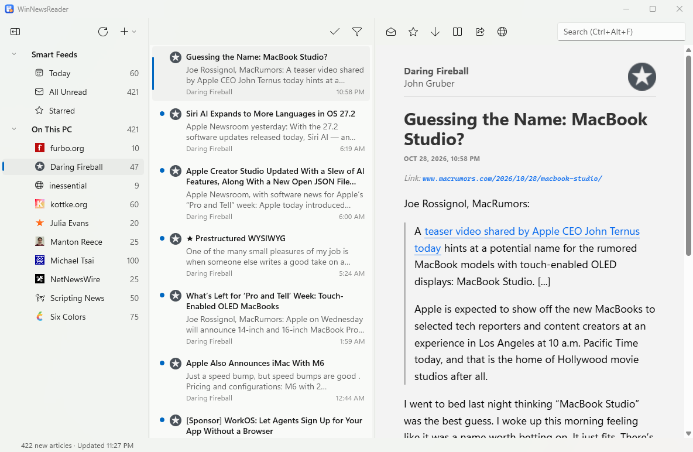
The menu bar along the top follows NetNewsWire's menus:
- File: New Feed, New Folder, New Window, Refresh, Import and Export Subscriptions, Add Account, Close Window, Preferences and Exit.
- Edit: Undo and Redo, copying the article's address, Article Search, and Find in Article.
- View: show or hide the sidebar, toolbar and status bar; Hide Read Feeds and Hide Read Articles; Clean Up; the sort order, Group by Feed and Use Column Layout; Article Theme, Text Size and Enable JavaScript; Full Screen.
- Go: Next Unread, and Today, All Unread and Starred.
- Article: the Mark commands, Reader View, Open in Browser and Share.
- Window: the main window, Info, and the Dinosaurs, Activity, Error Log and Account Stats windows.
- Help: this help, the keyboard shortcuts, release notes, checking for updates, and About.
Press Alt and the menu's first letter to open a menu from the keyboard, such as Alt+V for View. Each item shows its shortcut beside it.
File → New Window (Ctrl+Alt+N) opens another window on the same feeds, with nothing selected so you can read somewhere else. Marking things read, refreshing, subscribing or deleting in one window shows up in the others, and so does a change of appearance. The first window keeps the saved layout and does the automatic refreshing; if you close it while others are open, one of them takes over. Settings like sort order or the column layout apply to windows you open afterwards.
Subscribing to feeds
Choose File → New Feed… (Ctrl+N) and type a feed's address or just a website's address: WinNewsReader finds the site's feed for you. If there's a web address on the clipboard, it's filled in already. Pick the account and folder it goes in, and it's added and fetched right away.
RSS, Atom and JSON Feed all work. Feeds refresh when the app starts and every hour after; press Ctrl+R or the Refresh button to refresh now.
Coming from another reader? Export your subscriptions there as OPML, then choose File → Import Subscriptions…. Export Subscriptions… (Ctrl+Alt+E) does the reverse, folders and all.
You can also drag a link from your browser onto the sidebar: Add Feed opens with its address filled in, and dropping it on a folder, or on a feed in a folder, picks that account and folder. feed: links work too.
When an address offers more than one feed (a blog's posts and its comments, say), Add Feed lists them, best guess first, and you choose which to subscribe to.
Folders and organizing
Choose File → New Folder… (Ctrl+Shift+N) to make a folder. Drag a feed onto a folder to move it there, or use Move to on its right-click menu. Hold Ctrl while dragging to copy a feed into a second folder instead.
Dragging a feed onto another account, such as from On This PC to FreshRSS, subscribes to it there and removes it here; hold Ctrl to keep it in both.
Right-click a feed or folder to rename or delete it, mark all its articles as read, or open its home page.
Ctrl+click adds feeds or folders to your selection in the sidebar, and Shift+click selects everything between the selected row and the one you click. The chosen rows are shaded, the timeline shows the one you clicked last, and right-clicking one of them offers Mark All as Read and Delete for all of them (so does the Delete key). Clicking anywhere without Ctrl or Shift goes back to one row.
To rename a feed or folder, select it and press F2, or choose Rename… from its menu: the name becomes a box right in the sidebar. Enter or clicking away keeps the new name, and Esc drops it.
Import Subscriptions and Export Subscriptions ask which account when you have more than one. Importing into a FreshRSS account subscribes to each feed on the server one after another, so a long file takes a while; the status bar shows how far it has got, and any feeds that couldn't be added are listed at the end.
Reading
Select an article to read it; that marks it as read. Press Space to page down through it, and at the end, Space takes you to the next unread article, even in another feed. It's the quickest way through your reading.
The Mark Read and Star buttons show the article's state, and change it. Star an article to keep it in the Starred smart feed. Open in Browser (B or Enter) shows the article on its website, and Share sends its link through Windows' share sheet.
To work on several articles at once, Ctrl-click or Shift-click them in the timeline, or press Ctrl+A for all of them. The article pane shows them as a stack. Mark Read, Star, Share and Open in Browser then act on all of them: if any is unread, Mark Read marks them all read; if they're all read, it marks them all unread.
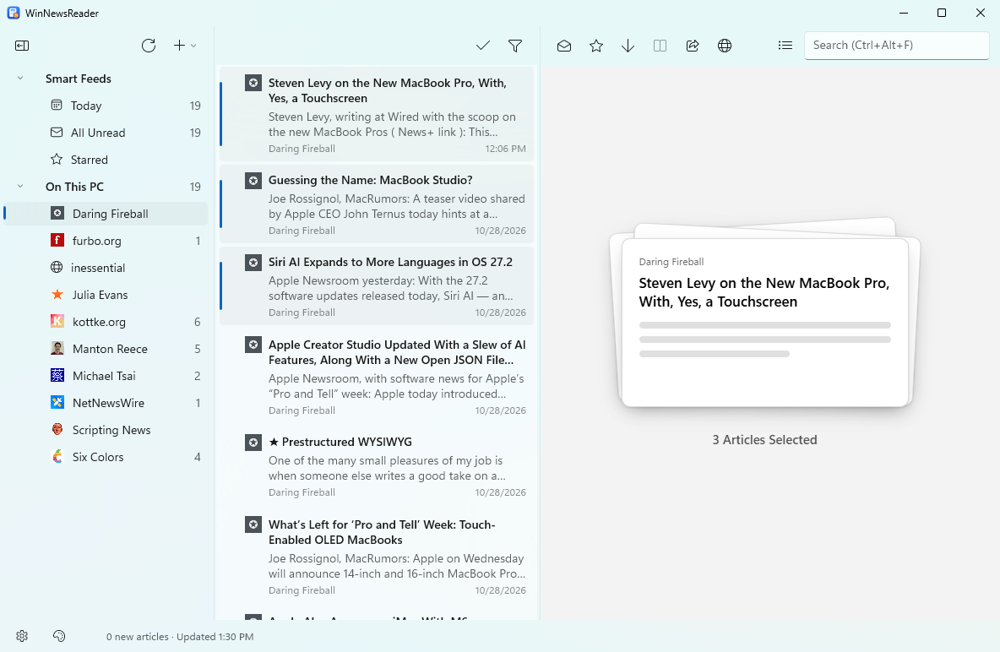
Right-click an article for more: Mark Above as Read and Mark Below as Read catch up on everything newer or older in the list, and you can jump to the article's feed in the sidebar or mark everything in that feed as read.
View → Group by Feed keeps each feed's articles together in the timeline, feeds in name order, with the newest (or oldest) first inside each feed.
View → Use Column Layout turns the timeline into a table with one line per article and the columns Unread, Starred, Feed, Title and Date. As in a mail reader, the table runs across the top, as wide as everything right of the sidebar, and the article is below it, also full width; drag the bar between them to change how tall the table is. Click a column's heading to sort by it, and click it again to reverse the order (the arrow shows which way); View → Sort Articles By does the same from the menu. Unread and Starred put those articles first. Newest Article on Top and Oldest Article on Top go back to sorting by date. Turn the layout off for the usual cards.
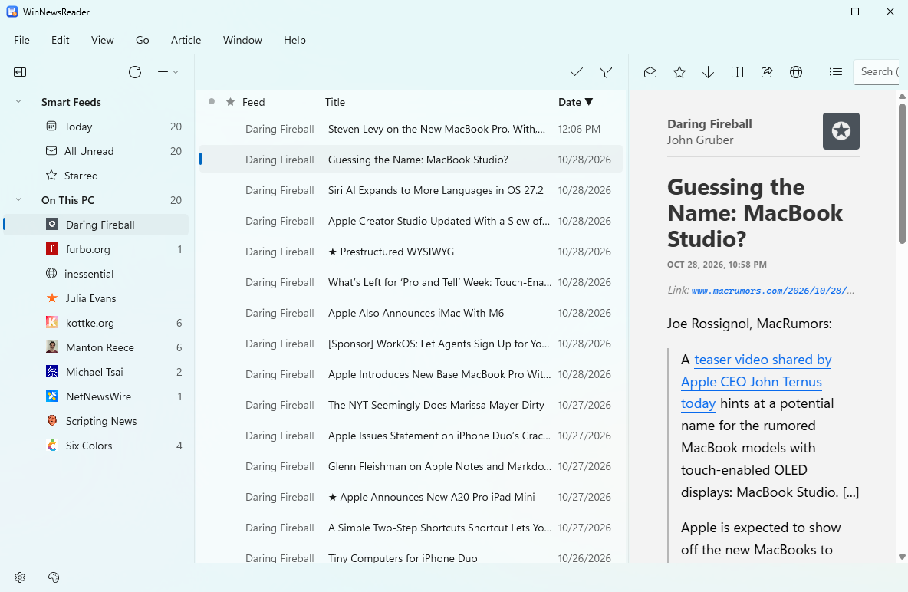
To see only what you haven't read, turn on Hide Read Articles over the timeline (per feed or folder), and View → Hide Read Feeds. View → Clean Up (Ctrl+') clears articles you've just read out of a timeline that's hiding read ones. The sort order is in the View menu too.
Drag an article out of the timeline, onto a browser window or a note, to take its web address with you; drag several and you get one address per line.
Where an article has a single author who has a picture (JSON Feed and Micro.blog feeds often do), the timeline shows that picture in place of the feed's icon.
Undo
Ctrl+Z undoes the last time you marked articles read or unread, starred or unstarred, marked a whole feed or list as read, or deleted a feed or folder. The Edit menu names what it will undo, such as Undo Mark All as Read, and Ctrl+Y redoes it. Undoing a delete subscribes to the feed again, in its folder and with the name you gave it; its articles come back at the next refresh, but the ones that were deleted with it, and whether you'd read or starred them, don't.
Activity, errors and stale feeds
Five small windows come from NetNewsWire's Window menu. Open them from Window.
- Current Activity (Ctrl+7) lists the feeds being downloaded right now.
- Activity Log (Ctrl+8) lists what each refresh did, feed by feed, newest first. Copy copies the selected lines, or all of them, and Clear empties the log.
- Error Log (Ctrl+9) shows only the feeds that couldn't be downloaded or weren't feeds, and why.
- Account Stats counts the feeds, folders, articles, unread and starred articles in each account.
- Dinosaurs (Ctrl+6) lists the feeds that haven't had a new article in six months. Select some to open their home pages, copy their addresses or delete them, and Undo Delete subscribes again.
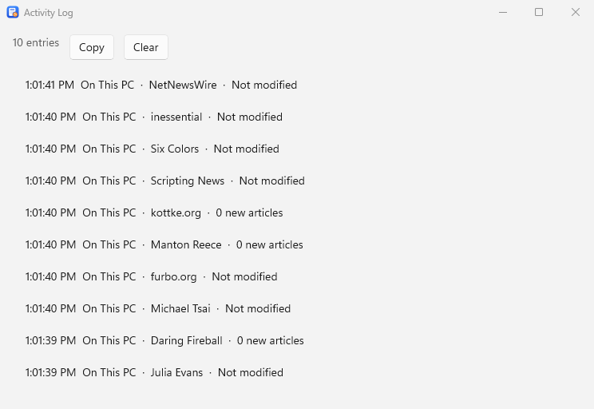
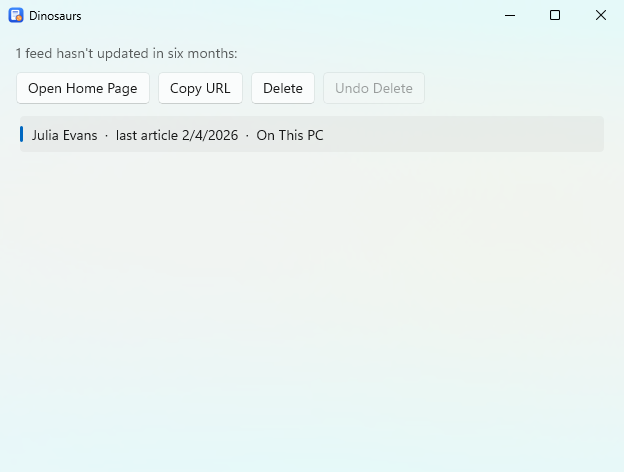
The logs are kept while WinNewsReader is open, and start empty each time it starts.
The status bar
The bar along the bottom has two buttons and a line of text.
- The gear button opens the same menu as right-clicking the selected row in the sidebar: Mark All as Read, Open Home Page, Copy URLs, Rename, Delete, Get Info and so on.
- The palette button picks the article theme, as View → Article Theme does.
- The bar can be hidden and shown again with View → Show Status Bar. The text says how the last refresh went. Click it to see how many articles are unread, then how many feeds and folders you have, then back to the refresh. While a refresh is running it always says so, and when the pointer is over a link in an article it shows the link's address.
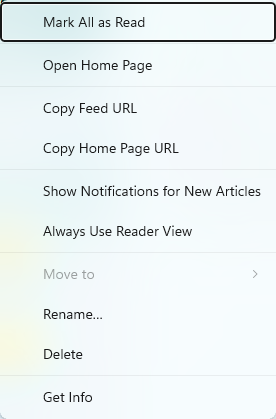
Find in an article
Press Ctrl+F (or choose Edit → Find in Article) to search the article you're reading. Every match is highlighted and the bar shows which one you're on. F3 and Shift+F3, or Enter and Shift+Enter, move between matches, and Esc closes the bar. Picking another article searches it for the same words.
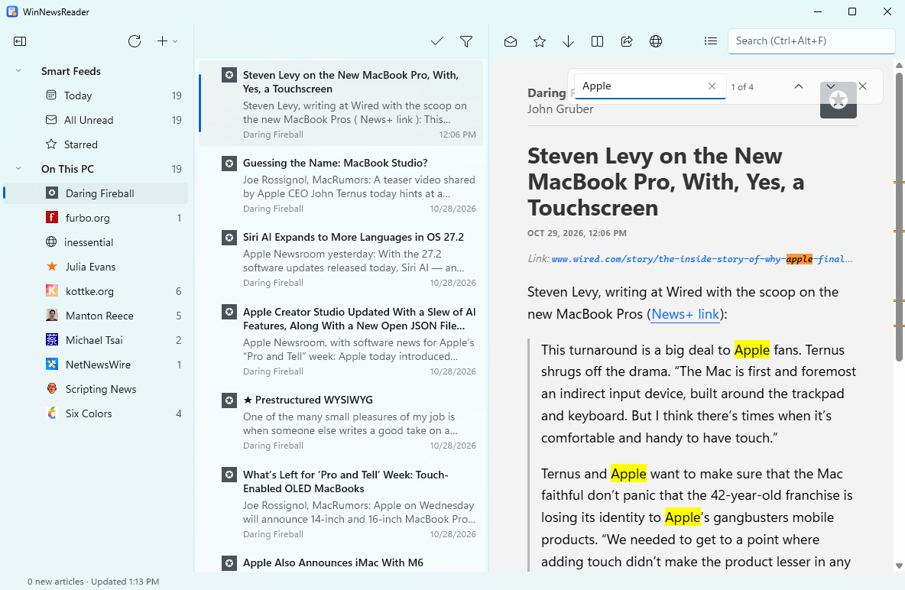
Reader View
Some feeds send only a summary. Reader View (Ctrl+Shift+R) fetches the article's web page, finds the article in it, and shows that in your theme, without the rest of the page. Click it again to go back to the feed's version.
A spinner shows while the page loads. Some sites turn away a plain download or only build their page with scripts, so WinNewsReader then loads the page in a hidden browser. If a page still can't be loaded, a message appears over the article, in the status bar and in the Error Log.
For a feed you always want this way, right-click it and choose Always Use Reader View, or turn it on in Get Info.
Article themes and text size
Articles are shown with NetNewsWire's themes. Pick one from View → Article Theme or in Preferences, and the size of the text from View → Text Size.
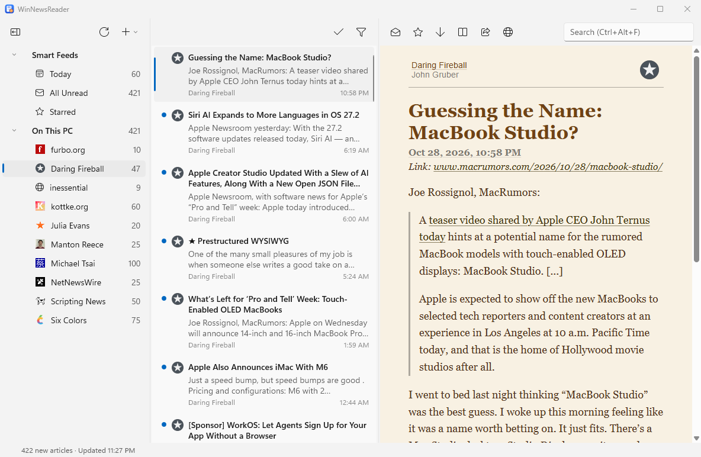
To add a theme, choose Install Theme… in the Article Theme menu and pick a zipped theme, or the Info.plist inside a .nnwtheme folder. Install Theme from URL… downloads a zipped theme from the web. You'll be asked before a theme is installed, and told if it runs scripts. Open Themes Folder shows where your themes are kept.
Themes are written for the Mac, so their Apple fonts are shown in their Windows counterparts, such as Segoe UI.
View → Enable JavaScript controls whether scripts in articles run. Turn it off if you'd rather articles didn't run any code; embedded videos and similar may then not work.
Search
Type in the search box (Ctrl+Alt+F) to search every article in every account, by title, text and author. Each word matches the start of words, so feed rea finds “feeds” and “readers”. Use OR between words to find either.
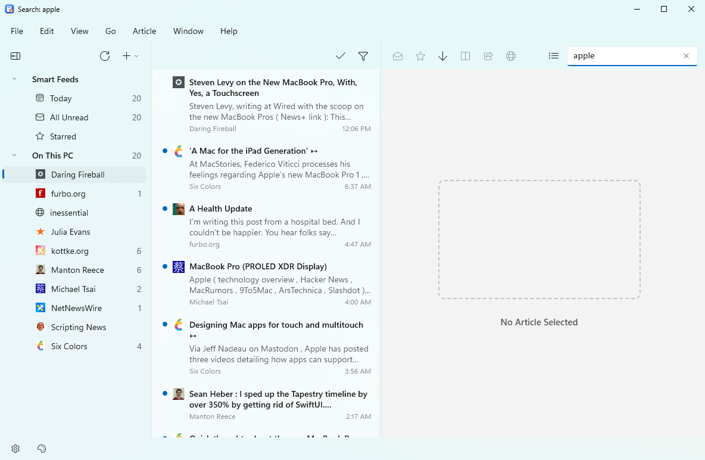
To search only what the timeline is showing, press the list button beside the search box first: results are then limited to the selected feed, folder or smart feed. Press it again to search everything.
Press Enter to jump to the results. Press Escape, clear the box or choose something in the sidebar to stop searching.
Preferences
Choose File → Preferences… (Ctrl+,). Changes take effect as you make them.
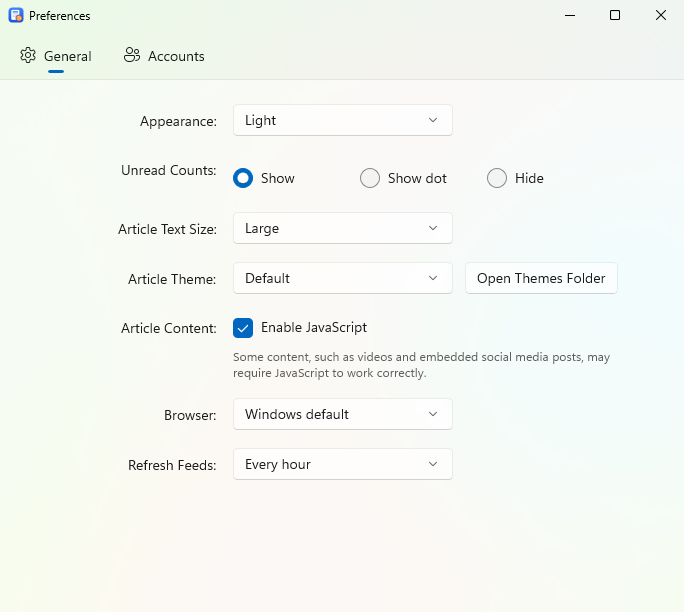
- Appearance is Same as Windows, Light or Dark, for the whole app, articles included.
- Unread Counts in the sidebar can be the number, a dot, or nothing. The badge on WinNewsReader's taskbar icon follows the same choice: your total of unread articles (shown as 99+ past 99), a dot, or no badge.
- Article Text Size and Article Theme are here as well as in the View menu, and Open Themes Folder shows where your own themes go.
- Enable JavaScript turns scripts in articles on or off.
- Browser is the one Open in Browser and links in articles use: Windows' default, or any browser installed on your PC.
- Refresh Feeds is Manually, or every 30 minutes, hour, 2, 4 or 8 hours. WinNewsReader also refreshes when it starts.
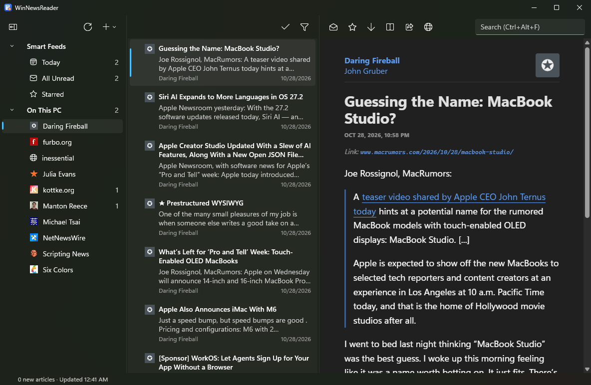
The Accounts tab lists your accounts. Turn one off and it disappears from the sidebar and isn't refreshed; turn it back on and it returns. Add Account…, Edit Account… and Remove Account… are here too. Edit lets you rename a synced account or change its server (FreshRSS only), username or password; leave the password blank to keep the saved one. The account keeps its feeds and articles. Each account needs its own name, and the same server and username can't be added twice; a second account on the same service is called, for instance, “FreshRSS 2” until you rename it.
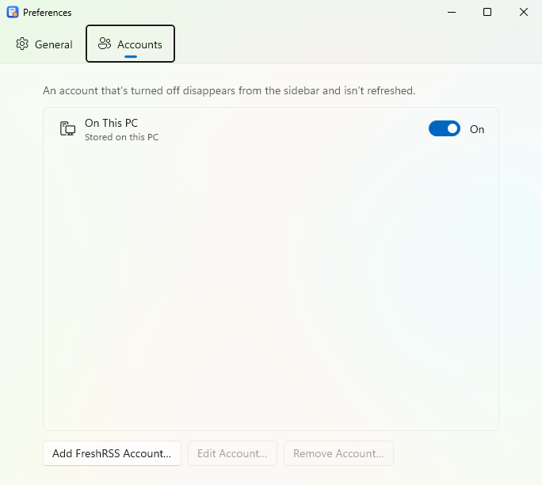
The Advanced tab has the update settings (check automatically, release or test builds, Check for Updates Now), a link to the privacy policy, and a button that opens the folder where crash reports are kept. It also has a Reader View setting: whether to prepare its hidden browser when WinNewsReader starts (on by default). Turn it off if you never use Reader View; the browser then starts the first time it's needed, which takes a few seconds longer.
Hidden settings
NetNewsWire has a few preferences with no window. Here they are in settings.json in the app data folder (Help → Open App Data Folder); close WinNewsReader before editing it. Each is true or false, and off by default.
ShowDebugMenu: adds a Debug submenu to the Help menu with Open Web Inspector (the article's developer tools), Open Icon Cache Folder and Rebuild Search Index.SuppressRefreshOnLaunch: don't refresh when the app starts.ArticleTitleInWindowTitle: the window's title is the selected article's title.TimelineSeparators: a line between the articles in the timeline.DoubleClickFeedMarksRead: double-clicking a feed in the sidebar marks it read, instead of opening its home page.SidebarFontSizeandTimelineFontSize: the size of the text in those two panes, in points, such as16. These are numbers;0keeps the default.
Get Info
Select a feed or folder and press Ctrl+I, or choose Get Info on its right-click menu. For a feed you can rename it, see and copy its home page and feed addresses, and turn on notifications or Always Use Reader View. A feed you rename keeps your name, even when the feed itself changes its title.
Notifications
For a feed you never want to miss, right-click it and choose Show Notifications for New Articles, or turn it on in Get Info. Each new unread article in that feed then shows a Windows notification with its title and the start of its text. Click it to read the article, or use Mark as Read or Mark as Starred right there.
Notifications come from refreshes, so they arrive while WinNewsReader is running. A notification goes away once you've read its article, and WinNewsReader clears its notifications when you close it. You can silence them altogether in Windows Settings, under System › Notifications.
Syncing with other services
WinNewsReader can sync with Feedbin, NewsBlur, The Old Reader, BazQux and FreshRSS, so your feeds, folders, and read and starred articles match your other devices. Choose File → Add Account… (or use the Accounts tab in Preferences), pick the service and sign in. The account appears in the sidebar under its own heading, and the password is kept in Windows Credential Manager, not in a file.
- Feedbin, The Old Reader and BazQux: sign in with your email and password.
- NewsBlur: sign in with your username and password.
- FreshRSS: if you run or use a FreshRSS server, open your profile settings there and set an API password (it's separate from your login password), and make sure the API is turned on in its authentication settings. Then enter your server's address (WinNewsReader adds
/api/greader.phpfor you; if your API is somewhere else, enter its full address ending ingreader.php), your username and the API password.
Feedbin lets a feed sit in several folders or at the top level. FreshRSS, The Old Reader and BazQux put every feed in exactly one folder, and NewsBlur in exactly one place. FreshRSS, The Old Reader and BazQux subscribe only to RSS and Atom feeds, so a JSON Feed can't be moved there. Inoreader and Feedly aren't supported yet.
Keyboard shortcuts
Help → Keyboard Shortcuts lists them all in a window. The keyboard follows NetNewsWire's, with Ctrl for Cmd. Single-key shortcuts work from any pane, including while you're reading an article, but not while you're typing in a box.
Reading
| Space | Page down; at the end, go to the next unread article |
| Shift+Space | Page up |
| N or + | Next unread article |
| - | Previous unread article |
| R or U | Mark read or unread |
| S | Star or unstar |
| K | Mark all as read |
| M | Mark unread and go to the next unread |
| L | Mark all as read and go to the next unread |
| O | Mark older articles as read |
| B or Enter | Open in browser |
| A / Z | Previous / next feed |
Moving around
| ← → | Move between the sidebar, the timeline and the article |
| , / . | Collapse / expand the selected folder (in the sidebar) |
| ; / ' | Collapse / expand all folders (in the sidebar) |
| Ctrl+1, 2, 3 | Today, All Unread, Starred |
| Ctrl+/ | Next unread |
Commands
| Ctrl+R or F5 | Refresh |
| Ctrl+N | New feed |
| Ctrl+Shift+N | New folder |
| Ctrl+K | Mark all as read |
| Ctrl+Shift+U | Mark read or unread |
| Ctrl+Shift+L | Star or unstar |
| Ctrl+Shift+R | Reader View |
| Ctrl+Shift+H | Hide read articles |
| Ctrl+Shift+F | Hide read feeds |
| Ctrl+' | Clean up |
| Ctrl+Alt+S | Show or hide the sidebar |
| Ctrl+Alt+F | Search |
| Ctrl+Z / Ctrl+Y | Undo / redo marking read or starred and deleting a feed or folder (Ctrl+Shift+Z also redoes) |
| Ctrl+F | Find in the article; F3 / Shift+F3 for the next / previous match, Esc to close |
| Ctrl+Alt+K / Ctrl+Shift+K | Mark above / below as read |
| Ctrl+Shift+C / Ctrl+Alt+C | Copy the article URL / external URL |
| Ctrl+→ | Open in browser (with the article focused) |
| Ctrl+6, 7, 8, 9 | Dinosaurs, Current Activity, Activity Log, Error Log |
| F11 | Full screen |
| Ctrl+Alt+T | Hide or show the toolbar (with it hidden, right-click empty space in the sidebar for Show Toolbar) |
| Ctrl+0 | Bring the main window forward |
| Ctrl+W | Close the window |
| Ctrl+I | Get Info |
| Ctrl+, | Preferences |
| Ctrl+Alt+E | Export subscriptions |
| F2 | Rename the selected feed or folder in place (in the sidebar) |
| Delete | Delete the selected feed or folder (in the sidebar) |
| F1 | This help |
| Ctrl+Q | Quit |
Installing and updating
Get WinNewsReader from the Microsoft Store or download the installer. Copies installed from the Microsoft Store receive updates through the Store.
The installer puts WinNewsReader in your own folder, so it needs no administrator rights, and sets up the WebView2 runtime if your PC lacks it. Your feeds and settings are kept apart from the program, so uninstalling or updating never touches them. The installer is code-signed, but until it has built up a reputation Windows SmartScreen may still warn about it; choose More info → Run anyway if you trust where you got it.
A copy installed with the direct installer checks for updates when it starts and offers to install them and restart. Help → Check for Updates… looks when you ask, and Preferences → Advanced turns the automatic check off or switches to test builds.
The installer also tells Windows to open feed: and feeds: links, and winnewsreader: links, with WinNewsReader: clicking one in a browser opens Add Feed with its address filled in, in the copy that is already running. It lists WinNewsReader under Settings → Apps → Default apps, where you can choose it for those links, and it opens .nnwtheme files by installing the theme.
If WinNewsReader quits unexpectedly, the next start offers the report it saved. Nothing is sent; see the privacy policy.
Your data
Everything stays on your PC, in %LOCALAPPDATA%\WinNewsReader: your feeds and articles, settings, cached site icons and your own themes. WinNewsReader talks only to the sites whose feeds you follow, and to your FreshRSS server if you add one. There's no account to sign up for and nothing is sent anywhere else.
More help
Found a problem, or have an idea? Open an issue on GitHub. What has changed lately is on the news page. The source code is at github.com/shaztechio/WinNewsReader.